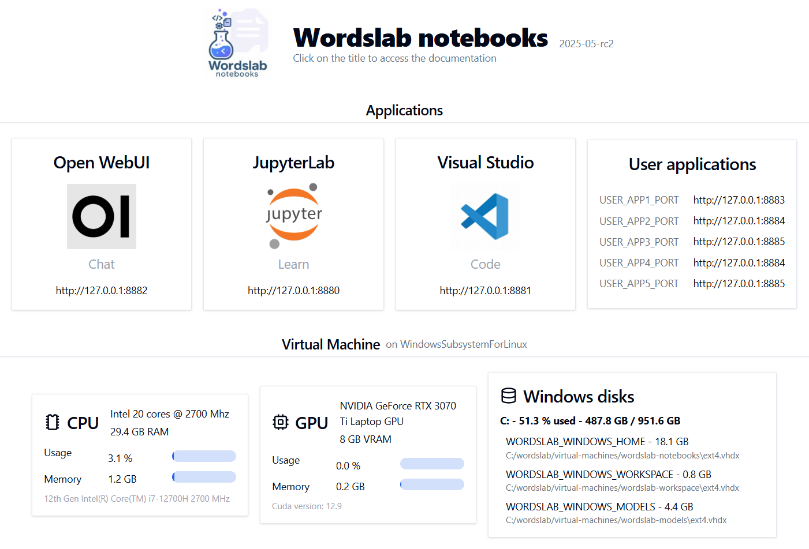

Wordslab notebooks
Learn, explore and build AI applications on your own machine
Overview

One click install of all the tools you need to learn, explore and build AI applications on your own machine.
- Recent and compatible versions of the best open source tools
- Optimized work environment to save disk space and memory
- Options to leverage your own machines at home or to rent more powerful machines in the cloud
- Documentation to guide you in your AI learning and exploration journey
3 main applications
- A rich chat interface (text, images, voice) : Open WebUI
- A notebooks platform (text & code) : JupyterJab + Jupyter AI extension
- A development environment (code) : Visual Studio Code + Continue.dev extension + Aider terminal agent

Installs a ready to use and fully integrated AI environment with
- A visual dashboard to help you navigate all applications and manage your machine resources
- Optimized inference engines to run AI models : Ollama + vLLM
Why use this instead of a popular cloud services like ChatGPT ou Gemini ?
- Free solution with no rate limits if you already own a powerful machine
- Confidentiality and privacy of your data and projects
- Choose what tools and models you install and when you upgrade
- Understand how AI works and build your own solutions
Redirecting to the GitHub wordslab-org/wordslab-notebooks project...